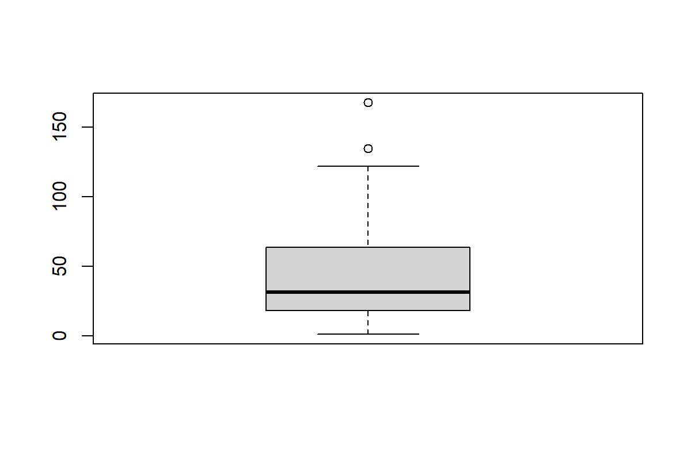

Data Analysis for Interactive Environments
ICA - Analysis of…
Quarto
In Quarto enables you to weave together content and executable code into a finished document. To learn more about see Quarto
Descriptive Statistics - Air Quality
Figure 1 explores the impact of temperature on ozone1 level…
Figure 2 shows the key statistics measures and an outline of central tendency, spread, and skewness of ozone level.

Table 1 presents….
| Ozone | Solar.R | Wind | Temp | Month | Day |
|---|---|---|---|---|---|
| 41 | 190 | 7.4 | 67 | 5 | 1 |
| 36 | 118 | 8.0 | 72 | 5 | 2 |
| 12 | 149 | 12.6 | 74 | 5 | 3 |
| 18 | 313 | 11.5 | 62 | 5 | 4 |
| NA | NA | 14.3 | 56 | 5 | 5 |
| 28 | NA | 14.9 | 66 | 5 | 6 |
Table 2 presents….
| Ozone | Solar.R | Wind | Temp | Month | Day | |
|---|---|---|---|---|---|---|
| 148 | 14 | 20 | 16.6 | 63 | 9 | 25 |
| 149 | 30 | 193 | 6.9 | 70 | 9 | 26 |
| 150 | NA | 145 | 13.2 | 77 | 9 | 27 |
| 151 | 14 | 191 | 14.3 | 75 | 9 | 28 |
| 152 | 18 | 131 | 8.0 | 76 | 9 | 29 |
| 153 | 20 | 223 | 11.5 | 68 | 9 | 30 |
According to Smith (2023) we may consider….and is proven (Smith 2023; Doe and Johnson 2021). A number of online sources (Quarto Development Team 2023) report…
References
Doe, Jane, and Michael Johnson. 2021. ‘Advancements in Quantum Computing’. Journal of Computing Research 25 (4): 112–30.
Quarto Development Team. 2023. ‘Quarto Documentation’. 2023. https://quarto.org/docs/.
Smith, John. 2023. ‘Example Article’. Journal of DAIE 42 (3): 123–45.
Footnotes
Ozone is a molecule composed of three oxygen atoms.↩︎
Citation
BibTeX citation:
@online{j. jones2023,
author = {J. Jones, Jane},
title = {Data {Analysis} for {Interactive} {Environments}},
date = {2023-12-14},
langid = {en-GB}
}
For attribution, please cite this work as:
J. Jones, Jane. 2023. “Data Analysis for Interactive
Environments.” December 14, 2023.